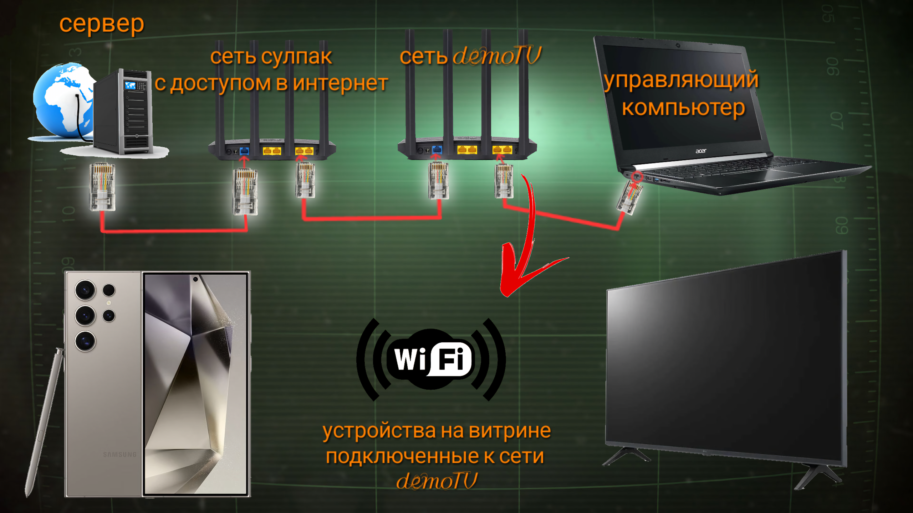

Панель удалённого управления
этот сайт
и нажмите кнопку меню слева вверху (или проведите пальцем от левого края экрана). Пульт сам найдёт компьютер с программой — если браузер спросит доступ к
устройствам в локальной сети, нажмите «Разрешить». В пульте: состояние всех ТВ,
синхронизация, перезапуск показа, включение ТВ и действия с каждым телевизором
(нажмите на ТВ в списке).
192.168.1.2 — 192.168.1.249.
Резервировать адрес для компьютера не нужно: программа и пульт сами находят друг друга.
Телевизоры → Найти телевизоры, выделите
ТВ и нажмите Добавить выбранные.
Телевизоры → Найти телевизоры, выделите
ТВ и нажмите Добавить выбранные.
Отладку по USB и
Отладку по сети (Wi-Fi ADB), если есть.
Menu ➔ 1 ➔ 1 ➔ 4 ➔ 7 ➔ в
меню разработчика выберите Debug ➔ ADB enabled: ON.
Младшим моделям ARG настройка не нужна.
Телевизоры → Найти телевизоры, выделите
ТВ и нажмите Добавить выбранные. Браузер программа установит сама.
Остановить трансляцию.
Загрузить рекламный набор и введите логин и пароль учётной записи
директора магазина (если вы входили ранее, они подставятся сами). Выберите папку на
сервере.Обработать видео: задайте
качество и запустите обработку. По завершении появится «Видео готово к трансляции».
Запустить трансляцию. Телевизоры включатся и запустят показ сами,
новые ролики заменят старые автоматически.
Перезапустить показ на ТВ. Если отдельный ТВ всё равно показывает
старые ролики — Телевизоры → правая кнопка по ТВ → «Очистить кэш роликов
на ТВ».
StreamTV на компьютере и нажмите
Запустить трансляцию.